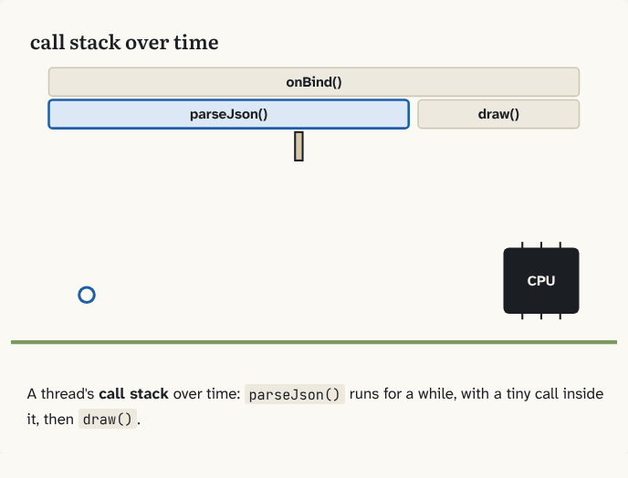

Free courses · 6 puzzles so far · about 30 minutes
Performance, under the hood
What the profiler is really showing you: how a sample differs from a trace, how to read a flame chart, why a slow function isn't always busy, when a frame is late, what the garbage collector actually costs, and what a heap dump proves. Built from the kernel up, one small puzzle at a time.
Start the first puzzle → Your learning →

How it works
Each puzzle starts with something a profiler shows you, gives you the one building block behind it, shows it in a diagram that plays itself, and ends with three questions you have to answer to unlock the next one. Facts come from the Android, ART, simpleperf and Perfetto documentation, linked on every page. How these courses are made, and how they're checked →
Modules
Every puzzle opens: start wherever you like. Each one builds on the ones before it; its check tells you you're ready for the next. ✓ marks the ones you've passed (saved only in this browser).
Module 1: What the profiler is really showing you
Samples and traces, flame charts, thread states, late frames, the garbage collector and heap dumps. Know this already? Take the check →
- Start here: A photo or a diary Android Studio offers to take snapshots of what your app is running, or to record every method. They answer different questions, and one of them changes the timings it measures. Here's what each actually records.
- Reading the flames The profiler draws the same recording two ways. In one, left to right is time; in the other, it isn't. Here's how to read each, and where a slow function really spends its time.
- Slow isn't always busy A trace section on your main thread takes 120 ms, but a sample of the same moment shows almost nothing running. Both are right. Here's the line under every thread in a system trace that explains it. Builds on 0, 1.
- The late frame The Android course showed that a frame must be ready before the screen's next refresh. Perfetto draws that limit for every frame, next to when the frame really finished. Here's how to read the two lines, and tell your app's lateness from someone else's. Builds on 2.
- What the collector costs "Freeing memory paused my app" was true on old Android. Modern ART collectors barely pause. Here's how ART allocates and collects, and the way it can still cost you frames. Builds on 2.
- What a heap dump proves Puzzle 4's collector frees everything it can't reach. So how does memory get stuck in a garbage-collected app? Here's what a snapshot of memory records, the two sizes it shows, and the chain that proves memory is stuck. Builds on 4.
Module 2: Measuring for real (next)
Macrobenchmark and why one run proves nothing; baseline profiles and what ART compiles ahead of time; startup traced end to end; reading a Perfetto trace with SQL.
Module 3: Memory under pressure (later)
Native memory and bitmaps, the low memory killer, trimming memory, and allocation tracking.
Take it with you
Continue with Claude
Copies a prompt that turns Claude into your tutor for this course: what you've passed, the words you know, the questions you slipped on, and how to teach you, one small block at a time. Paste it into Claude, or any AI assistant. Built in your browser from your progress; nothing is sent anywhere.
Download for Obsidian
The whole course as an Obsidian vault: a note per puzzle linked to the puzzles it builds on (open the graph view to see the building blocks), a glossary, and every question as a flashcard for the Spaced Repetition plugin.